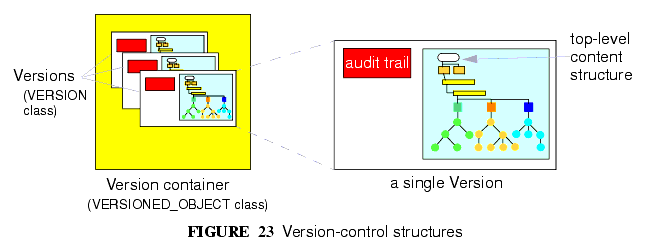
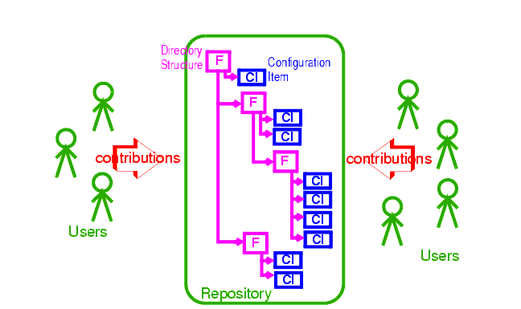
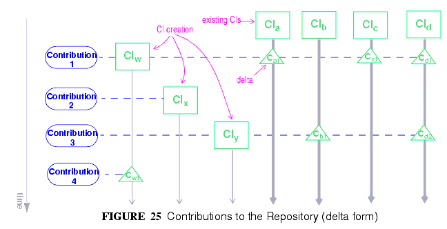
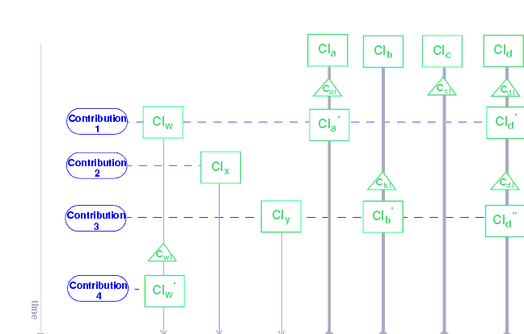
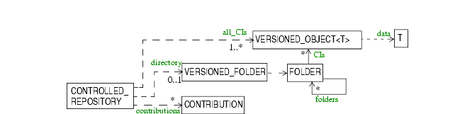

8 Versioning
8.1 Overview
Version control is an integral part of the openEHR architecture. An openEHR repository for EHR or demographic information is managed as a change-controlled collection of "version containers" (modelled by the VERSIONED_OBJECT<T> class in the common.change_control package), each containing the versions of a top-level content structure (such as a Composition or Party) as it changes over time. A version-controlled top-level content structure is visualised in FIGURE 23.

Versioning of single top-level structures is a necessary, but not sufficient requirement for a repository that must provide coherence, traceability, indelibility, rollback, and support for forensic examination of past states of the data. Features supporting "change control" are also required. Under a disciplined change control scheme, changes are not made arbitrarily to single top-level structures, but to the repository itself. Changes take the form of change-sets, called "Contributions", that consist of new or changed versions of the controlled items in the repository. The key feature of a change-set is that it acts like a transaction, and takes the repository from one consistent state to another, whereas arbitrary combinations of changes to single controlled items could easily be inconsistent, and even dangerously wrong where clinical data are concerned.
These concepts are well-known in configuration management (CM), and are used as the basis for most software and other change management systems, including numerous free and commercial products available today. They are a central design feature of openEHR architecture. The following sections provide more details
8.2 The Configuration Management Paradigm
The "configuration management" (CM) paradigm is well-known in software engineering, and has its own IEEE standard1. CM is about managed control of changes to a repository of items (formally called "configuration items" or CIs), and is relevant to any logical repository of distinct information items which changes in time. In health information systems, at least two types of information require such management: electronic health records, and demographic information. In most analyses in the past, the need for change management has been expressed in terms of specific requirements for audit trailing of changes, availability of previous states of the repository and so on. In openEHR, the aim is to provide a formal, general-purpose model for change control, and show how it applies to health information.
8.2.1 Organisation of the Repository
The general organisation of a repository of complex information items such as a software repository, or the EHR consists of the following:
- a number of distinct information items, or configuration items, each of which is uniquely identified, and may have any amount of internal complexity;
- optionally, a directory system of some kind, in which the configurations items are organised;
- other environmental information which may be relevant to correctly interpreting the primary versioned items, e.g. versions of tools used to create them.
In a software or document repository, the CIs are files arranged in the directories of the file system; in an EHR based on openEHR, they are Compositions, the optional Folder structure, Parties in the demographic service and so on. Contributions are made to the repository by users. This general abstraction is visualised in FIGURE 24.

8.2.2 Change Management
Change doesn't occur to Configuration Items in isolation, but to the repository as a whole. Possible types of change include:
- creation of a new CI;
- removal of a CI;
- modification of a CI;
- creation of, change to or deletion of part of the directory structure;
- moving of a CI to another location in the directory structure;
- attestation of an existing CI.
The goal of configuration management is to ensure the following:
- the repository is always in a valid state;
- any previous state of the repository can be reconstructed;
- all changes are audit-trailed.
8.3 Managing Changes in Time
Properly managing changes to the repository requires two mechanisms. The first, version control, is used to manage versions of each CI, and of the directory structure if there is one. The second is the concept of the "change-set", known as a contribution in openEHR. This is the set of changes to individual CIs (and other top-level structures in the EHR) made by a user as part of some logical change. For example, in a document repository, the logical change might be an update to a document that consists of multiple files (CIs). There is one Contribution, consisting of changes to the document file CIs, to the repository. In the EHR, a Contribution might consist of changes to more than one Composition, and possibly to the organising Folder structure. Any change to the EHR requires a Contribution. The kinds of changes that can occur to items affected in a Contribution are:
- addition of new item: a new Version container is created and a first Version added to it;
- deletion of item: a new Version whose data attribute is set to Void is added to an existing Version container;
- modification of item: a new Version whose data contains the updated form of the item content is added to an existing Version container (this may be done for a logical update or correction);
- import of item: a new `import' Version is created, incorporating the received Version;
- attestation of item: a new Attestation is added to the attestations list of an existing Version.
A typical sequence of changes to a repository is illustrated in FIGURE 25.

This shows the effect of four Contributions (indicated by blue ovals on the left hand side) to a repository containing a number of CIs (the directory tree is not shown for the sake of simplicity). As each Contribution is made, the repository is changed in some way. The first brings into existing a new CI, and modifies three others (changes indicated by the `C' triangles). The second Contribution causes the creation of a new CI only. The third causes a creation as well as two changes, while the fourth causes only a change. (Changes to the folder structure are not shown here).
One nuance which should be pointed out is that in FIGURE 25 Contributions are shown as if they are literally a set of deltas, i.e. exactly the changes which occur to the record. Thus, the first Contribution is the set {CIw, Ca1, Cc1, Cd1} and so on. Whether this is literally true depends on the construction of the persistence solution. In some situations, some CIs may be updated by the user viewing the current list and entering just the changes - the situation shown in FIGURE 25; in others, the system may provide the current state of these CIs for editing by the user, and submit the updated versions, as shown in FIGURE 26. Some applications may do both, depending on which CI is being updated. The internal versioning implementation may or may not generate deltas as a way of efficient storage.

For the purposes of openEHR, a Contribution is considered as being the set of Versions created or attested at one time, as implied by FIGURE 26.
8.3.1 General Model of a Change-controlled Repository
FIGURE 27 shows an abstract model of a change-controlled repository, which consists of:
- version-controlled configuration items - instances of VERSIONED_OBJECT<T>;
- CONTRIBUTIONs;
- an optional directory system of folders. If folders are used, the folder structure must also be versioned as a unit.
The actual type of links between the controlled repository and the other entities might vary - in some cases it might be association, in others aggregation; cardinalities might also vary. FIGURE 27 therefore provides a guide to the definition of actual controlled repositories, such as an EHR, rather than a formal specification for them.

8.4 The "Virtual Version Tree"
An underlying design concept of the versioning model defined in openEHR is known as a "virtual version tree". The idea is simple in the abstract. Information is committed to a repository (such as an EHR) in lumps, each lump being the "data" of one Version. Each Version has its place within a version tree, which in turn is maintained inside a Versioned object (or "version container"). The virtual version tree concept means that any given Versioned object may have numerous copies in various systems, and that the creation of versions in each is done in such a way that all versions so created are in fact compatible with the "virtual" version tree resulting from the superimposition of the version trees of all copies. This is achieved using simple rules for version identification and is done to facilitate data sharing. Two very common scenarios are served by the virtual version tree concept:
- longitudinal data that stands as a proxy for the state or situation of the patient such as "Medications" or "Problem list" (persistent Compositions in openEHR) is created and maintained in one or more care delivery organisations, and shared across a larger number of organisations;
- some EHRs in an EHR server in one location are mirrored into one or more other EHR servers (e.g. at care providers where the relevant patients are also treated); the mirroring process requires asynchronous synchronisation between servers to work seamlessly, regardless of the location, time, or author of any data created.
The versioning scheme used in openEHR guarantees that no matter where data are created or copied, there are no inconsistencies due to sharing, and that logical copies are explicitly represented. It therefore provides direct support for shared data in a shared care context.
|
openEHR Foundation http://www.openEHR.org |